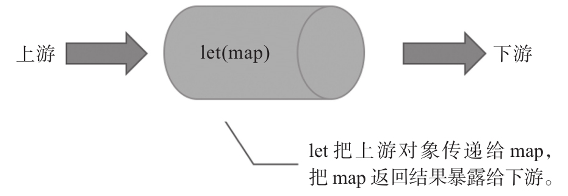

使用bind和call的方法，Observable类本身不会被影响，但是每一个操作符的函数体内依然需要访问this，之前已经说过，访问this的函数不是纯函数，所以，所有非纯函数的问题在这些操作符的实现中都有可能出现。
另外，使用call也会让RxJS源代码失去类型检查的优势。RxJS的源代码是使用TypeScript编写的，使用TypeScript的主要原因就是利用其类型检查的特性，以此克服JavaScript语言本身没有类型检查的缺点，TypeScript代码中对标识符可以指定类型，这样可以避免很多低级bug，但是，call的返回结果是无法确定类型的，在TypeScript中只能用any来表示，这样，使用call来调用操作符也就部分丧失了TypeScript的这一点好处。
虽然bind和call的方式是一个大进步，明显还不是最优的结果，需要进一步改进。
从RxJS v5.5.0开始，加入了一种更先进的操作符定义和使用方式，称为pipeable操作符，也曾经被称为lettable操作符，但是因为字面上太难理解，所以改成pipeable [1] 。不过，为了理解这个概念，还是要从lettable讲起，更准确地说，从let讲起。
1.let：让它来做
在lettable操作符概念提出之前，let操作符就存在了，而且是用最传统的方式，也就是从rxjs/add/operator目录下的let.js导入，下面是一段示例代码：
import {Observable} from 'rxjs/Observable';
import 'rxjs/add/observable/of';
import 'rxjs/add/operator/map';
import 'rxjs/add/operator/let';
const source$ = Observable.of(1, 2, 3);
const double$ = obs$ => obs$.map(x => x * 2);
const result$ = source$.let(double$);
result$.subscribe(console.log);
从上面的代码可以看出，let的参数是一个函数，在这个例子中函数参数名为double$，这个函数名也以$为后缀，代表它返回的是一个Observable对象，double$同样接受一个Observable对象作为输入参数，也就是说，double$的功能就是根据一个Observable对象产生一个新的Observable对象。
当let被调用时，实际上就是把上游的Observable对象作为参数传递给double$，然后把返回的Observable交给下游来订阅。
注意观察一下double$的实现，虽然map的使用是通过给Observable打补丁导入的，但是map是直接作用于参数obs$，而不是作用于this，所以，double$是一个纯函数。这就满足了函数式编程的要求，用纯函数来表示操作符，不过上面毕竟还是用打补丁的方式导入了map，如果不想打补丁，那就可以换一个方式来实现map，代码如下，注意这里map是一个可以作为let参数的函数：
function map(project) {
return function(obs$) {
return new Observable(observer => {
return obs$.subscribe({
next: value => observer.next(project(value)),
error: err => observer.error(error),
complete: () => observer.complete(),
});
});
};
}
const result$ = source$.let(map(x => x * 2));
上面的代码看起来可能显得很繁杂，利用ES6的语法，上面map的实现方式可以更加简洁，使用ES6语法的代码如下：
const map = fn => obs$ => new Observable(observer => (
obs$.subscribe({
next: value => observer.next(fn(value)),
error: err => observer.error(error),
complete: () => observer.complete(),
})
));
图3-2展示了let的工作方式，let的作用是把map函数引入到链式调用之中，let起到连接上游下游的作用，真正的工作完全由函数参数map来执行。这里map函数的实现较之前的实现方式有很大区别，函数执行不再是返回一个Observable对象，而是返回一个新的函数，这个新的函数才返回Observable对象。

图3-2 let的工作方式
map的实现部分也看不到对this的访问，而是用一个参数obs$代替了this，这样，在数据管道中上游的Observable是以参数形式传入，而不是靠this来获得，让map彻底成了一个纯函数。
map执行返回的结果是一个函数，接受一个Observable对象返回一个Observable对象，正好满足let的参数要求。
使用map要借助let这个操作符的力量，能够被let当做参数来使用，凡是满足这样特性的操作符实现，就叫做lettable操作符，翻译过来就是“可以被let的操作符”，所以称为lettable也十分形象。
2.lettable和pipeable
RxJS从v5.5.0版本起引入了lettable操作符，大部分操作符都有pipeable操作符实现，注意是“大部分”而不是全部，这是因为：
·静态类型操作符没有pipeable操作符的对应形式。
·拥有多个上游Observable对象的操作符没有pipeable操作符的对应形式。
存在lettable形式的操作符，虽然依然保留“打补丁”和使用call的形式，但最终调用的都是lettable操作符的实现。
以RxJS中的map实现为例，如果用“打补丁”的方法，导入的是rxjs/add/operator/map.js，这个文件实际上从rxjs/operator/map.js导入map函数实现，挂在Observable.prototype上；而支持call方法的rxjs/operator/map.js，其实也只不过从rxjs/operators/map.js（注意路径里的operators是复数）文件中导入真正的lettable操作符，然后把this作为参数传递进去，从而得到常用的map操作符。
RxJS在引入lettable操作符之后依然保留打补丁和call方法的操作符模块，完全是为了向后兼容，让之前使用RxJS的代码依然能够正常工作，但是，从长远趋势来看，lettable操作符是方向，在未来的RxJS v6中，lettable操作符可能是唯一支持的操作符。
lettable操作符有不同于其他形式操作符的导入和使用方式，现在我们用RxJS官方的map的lettable操作符重写上面的代码，如下所示：
import {of} from 'rxjs/observable/of';
import {map} from 'rxjs/operators';
const source$ = of(1, 2, 3);
const result$ = source$.pipe(
map(x => x * x)
);
source$.subscribe(console.log);
代码3-1 使用lettable操作符
首先，导入静态操作符，这里是从rxjs/observable/目录下的同名模块导入，在这段代码中使用了of，所以导入的模块就是rxjs/observable/of。所有的静态操作符都没有对应的lettable操作符，导入静态操作符和之前并没有什么不同。
然后，导入map，从rxjs/operators导入，因为rxjs/operators是一个目录，所以实际导入的是rxjs/operators/index这个文件模块，其中汇聚了所有的lettable操作符，包括map。
细心的读者可能会问，为什么不用下面这种方式导入map？
import {map} from 'rxjs/operators/map';
当然可以，但是没有必要，因为这两种方式都可以导入lettable操作符形式的map。
你可能又会有疑问，从rxjs/operators里面导入，也就是从rxjs/operators/index模块导入，这个模块里面包含了所有的lettable操作符，但是我们这段代码里面只用到了map，那样岂不是很浪费？而且如果要把代码打包在浏览器端下载执行，那会让打包文件平白无故多出很多没用的代码吗？
只要使用lettable操作符，就不需要有这样的顾虑了，因为Tree Shaking技术可以对lettable操作符产生删除死代码的效果。
之前介绍过，如果RxJS用给Observable打补丁的方式导入操作符，无论代码里是否使用这些操作符，Tree Shaking都认为这些操作符会被引用，不会判定为死代码；不过，现在每一个lettable操作符都是纯函数，而且也不会被作为补丁挂在Observable上，Tree Shaking就能够找到根本不会被使用的操作符，开发者也就可以放心地从目录rxjs/operators（注意是复数）下导入lettable操作符模块。在代码3-1中，只要打包工具支持Tree Shaking，除了map之外其他的lettable opeartor代码都不会进入最终的打包文件中。
接下来看如何使用lettable操作符形式的map，既然名字叫做lettable，那毫无疑问可以通过let来使用map，但是，要导入let这个操作符，又不得不用传统的打补丁或者使用call的方式，就像下面的代码这样：
import 'rxjs/add/operator/let';
继续使用let，感觉就像“革命”不彻底一样。
正因为如此，RxJS让Observable类自带了一个新的操作符，名叫pipe，可以满足let具备的功能。使用pipe无需像使用let一样导入模块，任何Observable对象都支持pipe，可以如下使用map：
const result$ = source$.pipe( map(x => x * x) );
因为source$的数据序列是1、2、3，所以上面的代码利用map把source$的所有数据都乘以2，输出结果如下：
2 4 6
pipe不只是具备let的功能，还有“管道”功能，可以把多个lettable操作符串接起来，形成数据管道。
下面的代码示例通过pipe串接了filter和map两个lettable操作符：
import {of} from 'rxjs/observable/of';
import {map, filter} from 'rxjs/operators';
const source$ = of(1, 2, 3);
const result$ = source$.pipe(
filter(x => x % 2 === 0),
map(x => x * 2)
);
result$.subscribe(console.log);
因为Tree Shaking可以保证没被使用的lettable操作符不进入打包文件，所以，可以放心从rxjs/operators中导入任何lettable操作符，在上面的代码中用一行指令就导入了map和filter，这让导入操作符的代码更加简洁。
在pipe的使用部分，传入了两个参数，分别是filter和map函数的调用，这段代码相当于之前这样的链式调用：
const result$ = source$.filter(x => x % 2 === 0).map(x => x * 2);
因为filter过滤掉了所有的奇数，所以最后的运行结果如下：
4
在上面的例子中，pipe只包含了两个lettable操作符参数，实际上可以包含任意个数的参数，这样依然保持了链式调用的表达方式。
当然，如果不想用pipe而想用let来调用lettalbe操作符的话，也可以，代码如下：
const result$ = source$ .let(filter(x => x % 2 === 0) .let(map(x => x * 2));
很显然，使用let来调用多个lettable操作符并没有用pipe那么简洁明了。
在RxJS v5.5中引入lettable操作符是RxJS发展的一大步，同时也带来了很多的麻烦，因为对于不了解RxJS发展史的开发者，看到“lettable”这个词会一头雾水，使用的函数是pipe，但是参数操作符却叫lettable，这非常让人难以理解。正因为这个原因，RxJS官方在发布v5.5之后几个月将文档中关于lettable操作符的文字全部改为pipeable操作符，但是，互联网上很多教材依然以lettable称呼这种操作符。
读者们只需要知道，lettable操作符和pipeable操作符是同一种东西在不同阶段的称呼而已。
3.被迫改名的pipeable操作符
传统方式使用RxJS的代码迁移到pipeable操作符也很简单，假如以前用打补丁的方式是从rxjs/add/operator/下面导入某个模块，现在就只要从另一个目录rxjs/operators/下导入同名的模块就行，例如，以前导入map的代码如下：
import 'rxjs/add/operator/map';
现在导入pipeable操作符map的代码就是如下这样：
import {map} from 'rxjs/operators/map';
或者下面这样：
import {map} from 'rxjs/operators';
提示
在还未正式发布的RxJS v6中，很有可能只支持第二种方式的pipeable操作符导入方式，所以，为了代码在未来方便迁移到v6版本，最好现在就只用从rxjs/operators导入的方式。
有四个操作符比较特殊，传统的操作符名称和pipeable操作符名称不同，它们是：
·do
·catch
·switch
·finally
这四个操作符的名称都是JavaScript的关键字，以打补丁的方式赋值为Observable.prototype的某个属性值没问题，但是不能作为变量或者函数的标识符出现。
比如，对于do，如果新开发的lettable操作符依然叫做do，那么在代码中就要这样导入：
import {do} from 'rxjs/operators/do';
这样一来，这个导入的do函数就和JavaScript的关键字产生了语义冲突，JavaScript无法区分两个do。同样的道理，catch、switch和finally都不再是合适的lettable操作符名称，所以，在RxJS中，这几个操作符对应的lettable操作符实现有如下的名称变化：
·do改为tap
·catch改为catchError
·switch改为switchAll
·finally改为finalize
后三个操作符的新名字好理解，do改为tap，是因为do并不改变流进它的数据和事件，只是有机会引入一个函数来对流经do的数据做一些操作，比如记录日志，而tap也有“窃听”的意思，非常形象。在RxJS v4中，tap实际上是do的别名，所以给do功能的pipeable操作符实现命名为tap也不奇怪。
当你需要一个do功能的lettable操作符时，正确的导入代码是这样的：
import {tap} from 'rxjs/operators/tap';
如果要实现新的lettable操作符，也需要注意不要命名为JavaScript的关键字或者保留字，毕竟，简洁、易懂而且通用的单词也不多，很可能已经被JavaScript看中了。
4.管道操作符
无独有偶，有一个让JavaScript语言支持“管道操作符”（pipe operator） [2] 的JavaScript语法改进提议，管道操作符是一个竖杠和大于号的组合，也就是|>，用来连接两个值，前一个值没有任何要求，后一个值必须是函数，管道操作符的作用就是把前面的值作为参数来调用后面的函数。
例如，下面是一个使用管道操作符的代码示例：
666 |> foo
上面的代码等同于下面的代码：
foo(666)
管道操作符的威力还是体现在对一个值连续进行多次函数操作，比如下面这样：
666 |> foo |> bar
相当于就是下面这样的代码：
bar(foo(666))
请注意bar和foo的前后顺序反过来了，先执行foo，执行结果才是bar的参数，执行顺序和语法上函数的位置相反，这样不利于理解，但是用管道操作符的话，执行顺序和函数出现的前后顺序一致，这就是发明管道操作符的意义。
管道操作符的想法和RxJS中的pipe函数用法是一致的，只是，目前管道操作符还只是一个提议，但是可以看得出来，RxJS的设计与时俱进，紧跟JavaScript的语法发展。
当这种语法改进的提议被采纳之后，可以用下面这种形式来使用pipeable操作符：
const result$ = source$ |> filter (x => x % 2 === 0) |> map(x => x * 2)
使用pipeable操作符，RxJS才真正算得上实践了函数式编程，使用pipeable操作符才是未来的趋势。不过，在本书中，为了照顾还在使用RxJS v5.5.0之前版本的读者，介绍各个操作符时，依然使用传统的方式，读者在实际应用RxJS时，如果使用的是v5.5.0之后的版本，就可以改为使用pipeable操作符。
[1] 关于pipeable的概念可参考：goodbye lettable, hello pipeable https://github.com/ReactiveX/rxjs/pull/3224。
[2] TC39的管道操作符提案参见：https://github.com/tc39/proposal-pipeline-operator。